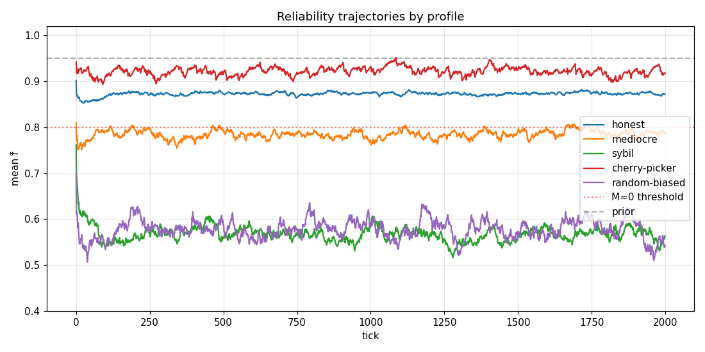
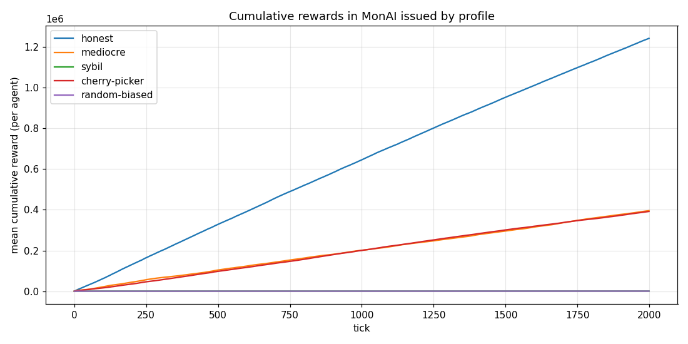
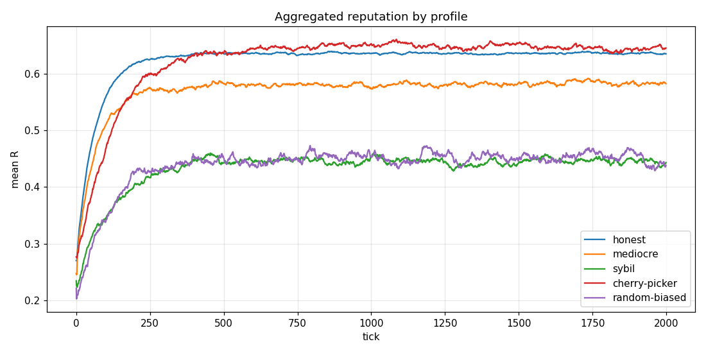

The agent-based simulator
To calibrate parameters and stress-test defenses, we simulate hundreds of virtual agents interacting in a miniature MonAI.
Why a simulator
Many of the MonAI protocol's parameters cannot be settled by reasoning alone. For example:
- What fraction of honeypots should be in the flow?
10%?20%? - What difficulty bonus
γis needed for hard tasks to pay enough? - Beyond what reliability threshold
f₀_maxin the sigmoid does a cherry-picker become unbeatable?
These questions require us to simulate the real behavior of agents with different strategies and observe what happens. That is the role of the agent-based simulator.
The v1 simulator does not reproduce the blockchain itself (no P2P layer, no binary format, no forks). It models the economic and reputation loops at an abstraction level sufficient for calibration. The protocol code will be something else, written after phase 0.
Methodology
The simulator is written in Python (numpy, matplotlib, pandas), without an external framework — direct, readable code. It runs in under 5 minutes per scenario on a standard laptop.
A simulation runs as follows:
- We create a population of agents with a mix of profiles (for example 100 honest + 20 mediocre + 5 cherry-pickers + 10 sybils).
- At each tick (default interpretation: 1 day), a Poisson number of tasks is generated, each with a difficulty drawn from a Beta(2, 5) distribution.
- For each task, the protocol selects 10 validators (probability proportional to their reputation R, with a quota for newcomers).
- Each validator votes according to their profile. Their reliability, reputation and acceptance rate are updated.
- A fraction of the tasks are honeypots with a known reference verdict — votes are scored against this independent truth.
- Rewards are distributed:
reward = G(f̂, d) · R_acc · min(cap_primes, (1+γ·d) · P) · k · R(t). - We collect the metrics (cumulative gain per profile, average reliability, etc.).
After a few thousand ticks, we check whether the gain hierarchies are correct: honest > mediocre > cherry-picker > sybil?
Five virtual agent profiles
| Profile | Behavior | p_correct | Acceptance |
|---|---|---|---|
| Honest | Votes correctly, accepts everything. | 0.99 | 100% |
| Mediocre | Votes correctly most of the time, accepts everything. | 0.85 | 100% |
| Cherry-picker | Very accurate on easy tasks, refuses difficult ones. | 0.999 (on easy ones) | ~58% (refuses θ > 0.3) |
| Sybil cheater | Votes at random to maximize fast gains. | 0.50 | 100% |
| Biased random | Always votes "approved" without thinking. | — | 100% |
p_correct is degraded linearly by the task's difficulty θ: an honest agent at p=0.99 on a task with θ=0.5 has only p=0.745 chance of voting correctly. It is more realistic — hard tasks are hard for everyone.
Three test scenarios
Scenario A — Reference calibration
Nominal mix: 100 honest + 20 mediocre + 5 cherry-pickers + 10 sybils + 5 biased random. 2,000 ticks. Verifies that the gain hierarchy is correct under normal conditions.
Scenario B — Massive sybil stress
100 honest vs 200 sybils. Verifies that sybils are crushed despite their numbers, and that honest agents are not suffocated by rate-limiting.
Scenario C — Fragile bootstrap
20 agents at startup (mix of honest/mediocre/sybils). Verifies that defenses hold when the pool of consensus-stable tasks is still small — that is, at protocol launch.
The v1 → v4 calibration journey
The simulator has been used over three successive rounds to tune parameters. Each round taught something and led to a structural modification.
Round v1 — initial defaults
Grid search over 27 combinations of (f0_max, k_sigmoid, γ). Result: no combination satisfies the 4 targets simultaneously. The cherry-picker remains systematically more profitable than the mediocre. Diagnosis: R_acc did not exist, so refusing tasks was costless.
Round v2 — R_acc as the 7th component of R
Addition of R_acc with weight w_acc ∈ {0.10, 0.20, 0.30}. 81 combinations tested. Measurable effect but insufficient: the M/C ratio goes from 0.68 to 0.86, but stays under 1. Diagnosis: the penalty diluted in aggregated R is not strong enough.
Round v3 — R_acc as a direct multiplier on the reward
Structural change: reward = M(f, d) · R_acc · k · R(t). w_acc reduced to 0.05 (symbolic role for rate-limiting). 27 combinations tested. 3 combinations strictly cross M/C > 1 for the first time. The mediocre > cherry-picker hierarchy is reached.
Round v4 — Automatic demand bonus + persistent mempool
Structural change: refactor of the simulator to support a persistent mempool where tasks survive across ticks. Implementation of the demand bonus P(t, task) which grows with refusals and with waiting time. 27 combinations tested on (δ_refus × T_attente × δ_temps). Extended reward formula: reward = G(f, d) · R_acc · min(cap_primes, (1+γ·d) · P) · k · R(t).
Major result: the demand bonus works mechanically (P rises with refusals, mempool persists, joint cap in place), but the economic effect on H/C is marginal (from 3.09 to 3.19, i.e. +0.10 vs target > 5). Structural cause: few cherry-pickers in the reference mix (5/140 agents) → few refusals → P stagnates around 1.01.
| Ratio | v1 max | v2 max | v3 max | v4 max | Target |
|---|---|---|---|---|---|
| H/M (honest / mediocre) | 14.0 | 13.5 | 12.9 | 13.5 | [3, 10] ✓ |
| H/C (honest / cherry-picker) | 1.78 | 2.18 | 3.09 | 3.19 | > 5 ✗ |
| M/C (mediocre / cherry-picker) | 0.68 | 0.86 | 1.21 | 1.02 | > 1 ✓ |
| H/S (honest / sybil) | 3057 | 2261 | 2259 | 1113 | > 100 ✓ |
The primary target H/C > 5 is not strictly reached (observed 3.19). Position retained: H/C = 3.19 is sufficient in practice. A 3× economic gap between the honest agent and the cherry-picker makes cherry-picking clearly suboptimal for a rational operator. The > 5 target was theoretical; the empirical reality at 3 is defensible.
Idea 7 (additional anti-cherry-picking mechanism) remains available in operations/07-idees-a-suivre.md if later community feedback judges H/C = 3 insufficient. The 3 secondary targets (H/M, M/C, H/S) are reached. v0.5 is considered empirically validated.
Mini-PoUW attack cost (separate Session 4 analysis)
Analytical analysis (notebook inscription_cout_attaque.ipynb) of the cost for an attacker who wants to create N Sybils in parallel. Assumption: spot cloud at 0.05 €/h, VDF perfectly non-parallelizable.
| T_pouw | Cost 1 M Sybils | Cost 100 M Sybils | Time for 1 M on 100 cores |
|---|---|---|---|
| 60 sec | 833 € | 83 k€ | 7 days |
| 180 sec (v0.5 default) | 2.5 k€ | 250 k€ | 21 days |
| 300 sec | 4.2 k€ | 420 k€ | 35 days |
| 600 sec | 8.3 k€ | 833 k€ | 70 days |
Calibrated recommendation: T_pouw_inscription ∈ [180, 300] sec (3-5 min). The Session 3 default of 3 min remains valid. 5 min would be more solid against a determined actor.
Current results (v4)
Selected combination (v0.5 defaults): f0_max = 0.85, k_sigmoid = 40, γ = 3.0, w_acc = 0.05, P_max = 2.5, δ_refus = 0.05, T_attente = 5, δ_temps = 0.01, cap_primes = 6.0, N_max_refus = 10.
The v3 + v4 defaults are kept unchanged. The v4 parameters are marked [CALIBRATED v4] in operations/06.
Observed v4 metrics:
Mean P at validation = 1.005-1.013depending on δ_refus (the bonus rises little)Joint cap activated = 0.00%of tasks (never)Impracticable tasks = 0.00%(never)Persistent mempool tasks = 65-70%(last > 1 tick)Issuance overhead ε ≈ 0.5-1.3%(well below the anticipated 5-15%)

f̂ per profile over 2,000 ticks (scenario A). Sybils drop rapidly to ~0.55, below the threshold where G(f) ≈ 0.

H/C target — reconsidered in v0.5
The original theoretical target was H/C > 5; observed maximum is 3.19 (v4). This target was reconsidered during the v0.5 arbitration — see the arbitration aside above. The validated criterion is now H/C ≥ 3, which v4 reaches (3.19). A 3× economic gap between honest and cherry-picker is judged sufficient in practice; Idea 7 (additional anti-cherry-picking mechanism) remains available if community feedback later disagrees.
Anti-sybil intact
On scenario B (100 honest vs 200 massive sybils), the H/S ratio reaches 1124 (scenario B v0.5 reference value, cf. formalisation/05 §E.3) — meaning the honest agent earns over a thousand times more per agent than the sybil. Very wide margin above the > 100 target. The naive sybil who has R_acc = 1.0 (accepts everything) creates no vulnerability because their reliability f̂ ≈ 0.56 makes G(f̂, d) ≈ 0.
Code and reproducibility
The simulator is in the simulateur/ directory of the repo. Structure:
simulateur/ ├── README.md user documentation ├── config.py all parameters centralized ├── agents.py Agent class + 5 profiles ├── economy.py M(f, d), reward, issuance ├── reputation.py f̂ Beta-Binomial, R, R_acc ├── honeypots.py replay pool (i) + synthetic (iii) ├── simulation.py main tick-by-tick loop ├── metrics.py CSV + figure collection ├── scenarios/ 3 test scenarios ├── calibration/ 3 grid searches (v1, v2, v3) └── notebooks/ 3 analysis + visualization notebooks
To run a scenario:
python -m simulateur.scenarios.A_calibration python -m simulateur.scenarios.B_stress_sybil python -m simulateur.scenarios.C_bootstrap
All the numerical values used are marked [TO CALIBRATE] in the spec. They are not final — they will be refined by further rounds of simulation and by peer review.